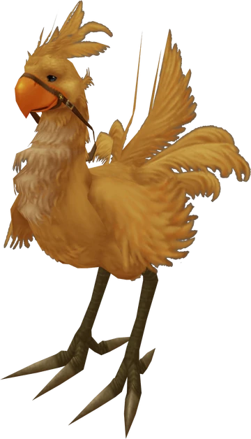
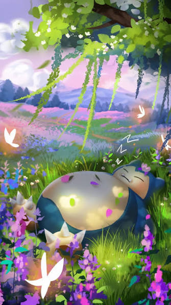

Joyeux anniversaire Deniz
Une nouvelle quête commence…
Rejouer un chapitre
Objets rares obtenus
Paris → Amsterdam
Train 9309 · Standard · Monture de secours : Chocobo

Un chocobo t'attend…
Réussis les 8 épreuves de Gaïa et de Spira, et ton billet retour est à toi tout de suite.
Pour récupérer ton billet retour, réussis les 8 épreuves de Gaïa et de Spira.
Amsterdam → Paris
Train 9388 · Standard
Journal de quête
Samedi verrouillé
Disponible dans

Un Ronflex bloque le chemin…
Ronflex se réveille !
Il s'étire, bâille… et libère le chemin.
Bienvenue à Amsterdam.
Arrivée, shopping, lumières & Quartier Rouge pimenté
- 10:50
Arrivée à Amsterdam Centraal
Premier arrêt : Victoria's Secret.
- 11:30
Arrivée à l'Hotel
On pose les sacs à l'Hotel (à 15 min de la gare). Puis balade photos : le pont face au café De Jaren, le coin de Staalkade et les canaux du Kloveniersburgwal.
- 12:15
Chasse aux affiches pour VV
Spot n°1 : Movie Ink (Oudezijds Achterburgwal 125), pour Hitchcock. (à 5 min de l'hôtel)
- 13:00
Frites légendaires
Déjeuner vers le Spui chez Vleminckx, biscuits chez Van Stapele, et l'entrée secrète du Begijnhof, le jardin caché du Spui.
- 14:00
Fleurs & Fromage
Le Marché aux fleurs Bloemenmarkt, puis du gouda chez Henri Willig ou à l'Old Amsterdam Cheese Store.
- 14:30
- 15:00
- 15:30
- 17:00
Balade Light Festival
Les œuvres lumineuses du Amsterdam Light Festival, à pied, au bord des canaux, dans le noir magique. Départ d'Amstel 1, pause chocolat chaud au De Sluyswacht, la petite maison penchée.
- 20:00
- 22:00
Dîner d'anniversaire
Bar & Lounge Dining
Dimanche verrouillé
Disponible dans
Impossible d'attendre demain ?
Maillot mystère · 8 épreuves
Jardin tropical, rues secrètes & retour
- 10:30
- 11:45
Chasse aux affiches pour VV, round 2
La boutique du Rijksmuseum (Vermeer, Rembrandt, Museumstraat 1) et celle du Van Gogh Museum (Museumplein 6).
- 12:30
12h30 - Lomanstraat
La rue aux arbres qui forment une arche au-dessus des maisons.
- 13:00
Le Jordaan
En tram puis à pied le long du Prinsengracht et de l'Egelantiersgracht : rues pavées, ponts fleuris et maisons penchées.
- 15:30
Déjeuner sur Haarlemmerdijk
Au choix : la tarte aux pommes mythique de Winkel 43, les crêpes géantes de The Pancake Bakery ou les croques XXL de Monty's Toasties. Puis souvenirs et pauses gourmandes : stroopwafels fraîches, bulbes de tulipes d'hiver, mini gouda aromatisé.
- 18:00
Retour à la gare
On récupère les sacs à l'Hotel, direction Amsterdam Centraal pour le train de 19h10.
Quête annexe : De Poezenboot
Le refuge pour chats… sur un bateau. Si on a le temps !
Partie sauvegardée · Bon voyage, joueur 1